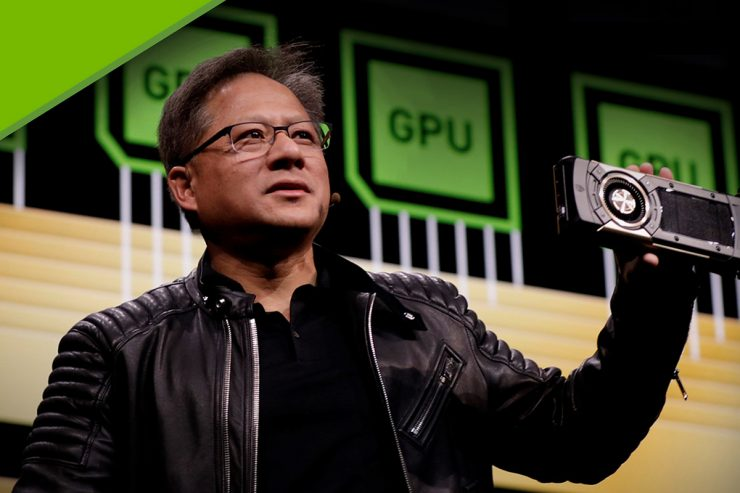

Later, the new 3000 series
cards came out and they shocked the whole world not only the gamers but every computer fan out there. The ray tracing technology was so new at the time that no would have thought they would top the 2000 series cards . When the 3000 was first put in stocks it was priced at almost only half the price of the 2000 series and this made a lot of GeForce fans very mad or annoyed. The lunch price for the 2080ti was 1,199 thousand dollars and the 3080 at only 649 hundred dollars which is a huge gap. Later in the lunch for the 3000 series the pricing would go up. The production was slow, and everyone had to wait for their cards sooner or later the price would be very similar to the 2080ti card. But if you would find a gaming store that sells the 2080 , they would sell it for more than the new cards. There was a lot of attention to the pricing but also to the performance of the brand new card. The 3080ti would shoot ahead of the 2080ti and be a 38% upgrade which is huge. The 3070ti one below 3080ti would only be 3% behind the 2080ti and would be around 150 dollars cheaper if you would buy it now.
cards came out and they shocked the whole world not only the gamers but every computer fan out there. The ray tracing technology was so new at the time that no would have thought they would top the 2000 series cards . When the 3000 was first put in stocks it was priced at almost only half the price of the 2000 series and this made a lot of GeForce fans very mad or annoyed. The lunch price for the 2080ti was 1,199 thousand dollars and the 3080 at only 649 hundred dollars which is a huge gap. Later in the lunch for the 3000 series the pricing would go up. The production was slow, and everyone had to wait for their cards sooner or later the price would be very similar to the 2080ti card. But if you would find a gaming store that sells the 2080 , they would sell it for more than the new cards. There was a lot of attention to the pricing but also to the performance of the brand new card. The 3080ti would shoot ahead of the 2080ti and be a 38% upgrade which is huge. The 3070ti one below 3080ti would only be 3% behind the 2080ti and would be around 150 dollars cheaper if you would buy it now.
Owner and the founders of the company
Nvidia was founded in the year 1993 by a men named Jensen Huang, Chris Malachowsky and Curtis Priem. With their beliefs they were sure that in the future games would be one of the biggest industries for computers and they wanted to make gaming as beautiful as they could. By the year 2006 Nividia was the only independent still operating . In the 1994 they partnered with their first company SGS-Thomson so thei could produce the single-chip graphical user interface accelerator . The first ever product came in the year 1995 NV1 . Sega used this card for 3d games. Nvidia product called RIVA 128 lunched the year 1997 and sold 1million units in the first 4 months. But now known as a GPU was invented in the year 1999. The first ever Xbox console partnered with Nvidia, and they used their GPU the year 2000. Many years pass and they partner with bunch of other companies for an example the ps3 used their graphics. Now there are about 23 years since the first GPU and in this short time game quality has improved drastically.
Nvidia was founded in the year 1993 by a men named Jensen Huang, Chris Malachowsky and Curtis Priem. With their beliefs they were sure that in the future games would be one of the biggest industries for computers and they wanted to make gaming as beautiful as they could. By the year 2006 Nividia was the only independent still operating . In the 1994 they partnered with their first company SGS-Thomson so thei could produce the single-chip graphical user interface accelerator . The first ever product came in the year 1995 NV1 . Sega used this card for 3d games. Nvidia product called RIVA 128 lunched the year 1997 and sold 1million units in the first 4 months. But now known as a GPU was invented in the year 1999. The first ever Xbox console partnered with Nvidia, and they used their GPU the year 2000. Many years pass and they partner with bunch of other companies for an example the ps3 used their graphics. Now there are about 23 years since the first GPU and in this short time game quality has improved drastically.
 
Nvidia users
Nvidia users are mostly from two categories one people who play high demanding video games and the other for high demanding video editing or photoshop . The Nvidia company supports both kind of users and offers GPU drivers for gamers or editing . Most of schools that have high demanding computer science have their Graphical processing device . Not only schools also places where you can pay to play their devices. Arena is a company in Iceland where people come together and play and all of their computers all have the 3080ti the best of the old gen GPU . The future looks very bright for the users and the company as they keep producing and doing their best. Every new gen of their GPU seems to surprise and the Users now have never been more happier .
Nvidia users are mostly from two categories one people who play high demanding video games and the other for high demanding video editing or photoshop . The Nvidia company supports both kind of users and offers GPU drivers for gamers or editing . Most of schools that have high demanding computer science have their Graphical processing device . Not only schools also places where you can pay to play their devices. Arena is a company in Iceland where people come together and play and all of their computers all have the 3080ti the best of the old gen GPU . The future looks very bright for the users and the company as they keep producing and doing their best. Every new gen of their GPU seems to surprise and the Users now have never been more happier .